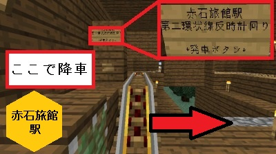
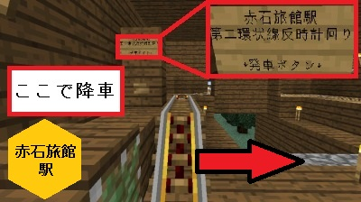

アクセス
赤石鯖は2015年4月にリニューアルされました。
そのため、赤石旅館を含む旧ワールドデータには現在アクセスできません(保存はされています)。ご注意ください。
そのため、赤石旅館を含む旧ワールドデータには現在アクセスできません(保存はされています)。ご注意ください。
ご注意ください。
ピラミッドから赤石旅館駅までの行き方
- 1.ピラミッド内部頂上から東側に下る
- 2.「三崎線」と書いてあることを確認
- 3.トロッコを出し、出発
- 4.RPJCT E1(ジャンクション)は直進


- 5.ナイスガイ駅は通過

- 6.RPJCT E2(ジャンクション)で左折
- 7.赤石旅館駅で降車
 

- 8.出口へ

- 9.歩道を左折

- 10.到着 お疲れ様でした。